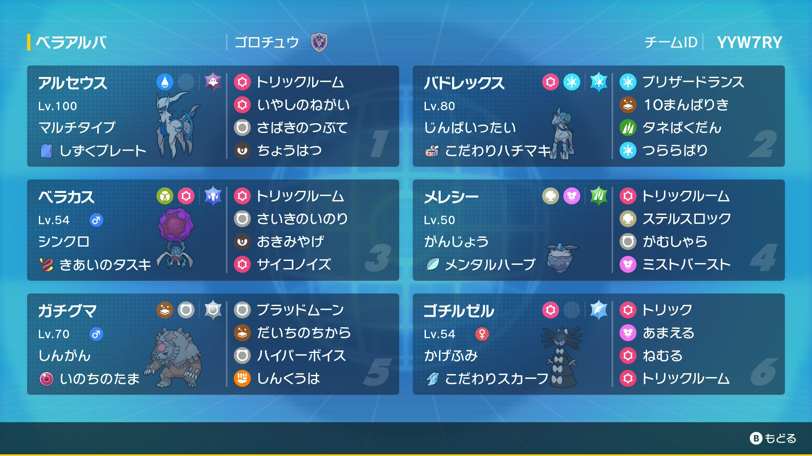

ベラアルセ純正トリル構築紹介
まえがき＆構築コンセプト
こんにちは、Gorochuです。
本サイトではシーズン36で使用した、ベラアルセ純正トリル構築について紹介します。
まずは本構築のコンセプトですが、アルセウスでトリル癒しの願い→鉢巻バドで攻撃→バドがやられた後ベラカスでトリル再起の祈り→再度鉢巻バドで攻撃となっております。
それでは、これから構築経緯及びポケモン紹介,立ち回りについて紹介します。
構築経緯
禁伝2体環境の頃から鉢巻白バドの楽しさに気づき使用していましたが、鉢巻白バドの課題として、
・自身でトリルを展開できないため、トリル要員が必要となる。
・火力は高いものの、タスキや守るなどでトリルが枯らされてしまうため、一回のトリルだけでは詰め切れない。
が挙がりました。
そこで、これらの課題を解決するために、トリル再起の祈りベラカス（＠気合のタスキ）を考えました。再起の祈りは瀕死になったポケモンを復活させることができるので、死に出しから安全にベラカスを出してバドを復活させることができます。
そして、初手メレシーでトリルミストバースト→鉢巻バドで攻撃→バドがやられた後ベラカスでトリル再起→再度鉢巻バドで攻撃がコンセプトの構築に至った（メレシーを採用した理由は、気合のタスキがなくても行動保証がある,技が優秀であるため）のですが、新たな課題として、
・設置技をまかれてしまうと、ベラカスでトリル再起の祈りができなくなってしまう。
・再生できるのは最大hpの半分だけなので、先制技などですぐに倒されてしまう。
が挙がりました。
禁伝2体環境ではここまでで開拓が止まってしまったのですが、幻環境になり、新たなベラカスの相棒としてアルセウスを考えました。
ベラカスとアルセウスの相性の良さについては、「ベラカスの使用方法及び相性の良いポケモン紹介」をご覧いただきたいのですが、簡潔に説明しますと、
・挑発で補助技を阻止できる。
・癒しの願いでhpを完全に再生できる。
が挙げられます。
こうしてベラアルセ純正トリル構築が出来上がりました。
ポケモン紹介
ベラカス のんき h252 b196 d60 s最遅
トリル 再起の祈り 置き土産 サイコノイズ ＠気合のタスキ ドラゴン
アタッカーが瀕死になった後、トリル再起の祈りを打ちます。その後ベラカスがまだ生存していたら、置き土産を使って早急に退場します。身代わり持ちにはサイコノイズが有効です。
調整は、毒びしを踏んだ場合でもトリル再起の祈りを行えるようにするために、bとdどちらにも振っています。
テラスタイプは、ミライコライの電気炎,ラオスの水に強いドラゴンです。
水アルセウス 穏やか h252 b84 s172
トリル 癒しの願い 裁きのつぶて 挑発 ＠しずくプレート ゴースト
初手でトリルを展開した後、癒しの願いで退場します。設置技や挑発を持っていると思われる相手には挑発を、裏のアタッカではスムーズに倒すことができない相手には裁きのつぶてを打ちます。
調整は、ブリジュのエレクトロビームやc+1臆病黒バドの草結びをを耐えるためにdに性格補正をかけ、上から挑発を打ちたいので最速グライ抜きまでsを振り、残りはbに振っています。
テラスタイプは、後出しから鉢巻ラオスのインファに対応できるゴーストですが、フェアリーも捨てがたいです。
メレシー のんき hb252 d4 s最遅
トリル ミスバ がむしゃら ステロ ＠メンタルハーブ くさ
ミライやガッサなどの、水アルセウスでは対応できないポケモンがいる場合や、ステロをまきたい場合、アルセウスよりも速い挑発持ちがいる場合（エナジーカミなど）に選出します。
調整は、コライやパオ,ホウオウの攻撃を2耐えする、ラオスのテラスなし水流連打を耐えるためにhb特化にしています。
持ち物は挑発対策のメンタルハーブ、テラスタイプはラオスの水流連打,ガッサの胞子に強いくさです。
白バド 勇敢 ha252 d4 s最遅
ブリザードランス 10万馬力 種爆弾 つららばり ＠拘り鉢巻 氷
本構築のエースです。氷テラスブリランで、h252アルセウスを確定一発,hb特化フロルも確定一発,hb特化ホウオウを高乱数一発（81.25%）で倒すことができます。
また、死に出しの炎テラスh4コライをいななき込みで確定一発で倒すことができるのも魅力的です。
サブウウェポンは、連撃ラオス,カイオーガ,水テラス対策の種爆弾と、タスキ・身代わり対策のつららばりです。
本構築の白バドは、トリル下で運用するのが前提なので、sを最遅にしています。
アカツキガチグマ 冷静 hc252 d4 s最遅
ブラッドムーン 大地の力 ハイパーボイス しんくうは ＠命の玉 ノーマル
ラッシャやママンボウが嫌な場合に、白バドの代わりに選出します。
命の玉ブラッドムーンは、先述した白バドに匹敵するほどの火力を出すことができるのと、はがねタイプにしか半減にされないのが魅力的です。
ゴチルゼル 図太い hb252 d4
トリック 眠る 甘える トリル ＠拘りスカーフ 飛行
ラッシャの選出抑制のためのポケモンです。受けループと当たった場合に選出します。
拘りトリックで相手のppを枯らし、悪あがきで自滅する1ターン前にトリルを打ち、自滅するターンにアタッカーに引くことで、受けポケモンを倒しつつアタッカーを展開することができます。
テラスタイプは地割れ対策の飛行です。
選出＆立ち回り
・基本的にはベラカス,アルセorメレシー,白バドorガチグマを選出します。
アルセorメレシーでトリル＆退場→アタッカーが攻撃→バドがやられた後ベラカスでトリル再起の祈り→再度アタッカーが攻撃が基本的な立ち回りです。
アルセorメレシー、白バドorガチグマのどちらを選出するかについては、「ポケモン紹介」のメレシーとガチグマの部分をご覧ください。
・アルセウスよりも速い設置技持ち（オオニューラなど）やフロルがいて、ベラカスがささっていない場合は、メレシー,アルセウス,白バドorガチグマを選出します。
その場合の立ち回りは、メレシーorアルセでトリル＆退場→アタッカーが攻撃→アルセorメレシーを後出ししてトリル＆退場→再度アタッカーが攻撃となります
・白バドとガチグマどちらも選出する場合は、白バドとガチグマどちらがささっているかを吟味し、刺さっている方をアルセウスの癒しやベラカスの再起でサポートするのが大切です。
さいごに
いかがでしたでしょうか。
あともう少しでsv対戦が終わり、ベラカスが使えなくなってしまうのではないかと思い、ベラカス構築の面白さを紹介すべくこの記事を書きました。
興味がありましたら是非ベラアルセ純正トリル構築を使ってみてください。